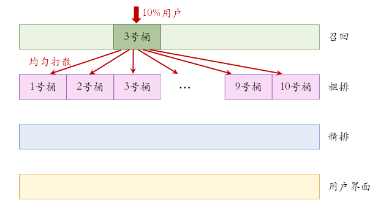

推荐系统
指标
推荐系统是互联网的根基，以B站为例

B站的新版首页如上图所示，一行五个视频曝光(impression)给用户，用户可以点击视频观看，观看时能进行够点赞收藏转发评论一系列操作。短视频是个例外，没有曝光和点击操作。下面介绍几个指标：
点击率=点击次数/曝光次数
点赞，收藏，转发率=点赞，收藏，转发次数/点击次数
完成率 = 观看时长/(点击次数×视频长度)，加入点击次数是为了归一化。
DAU,MAU，分别是日活用户与月活用户，与推荐系统强相关。
时长类，包括人均使用时长，人均观看视频数。
UCG相关，如人均创作量。这对于以用户创作为主要内容来源的平台尤为重要。
推荐系统的不能只依赖于个别指标，比如点击率就很容易被标题党提高。
系统上线流程
- 离线测试，用数据训练与测试，不部署到产品中，所以没有和用户交互。
- AB测试，把用户分为实验组和对照组。判断新策略是否好于旧策略，实验组一般占比很小来维持整体稳定，并且结果会反馈到工程师进行策略改进。
- 正式上线。
举一个例子，某视频网站的算法团队实现了一种新的召回策略，首先会进行离线测试，查看实验结果与功能是否正常。下一步会做AB测试，实验用户的选择一般使用Hash(UID)等策略将用户分成很多组。取某一组做实验组，使用新的策略，查看对各项指标的影响，若结果不如意，就根据反馈调整策略，若结果不错，就部署给所有用户。这里的实验组也可以根据某些参数不同分成多组，根据结果来选择使用什么参数组合。
KDD2010中的《overlapping experiment infrastructure : more,better,faster experimentation》提出了一种分层实验被广泛应用。可以根据推荐系统工作的不同阶段进行分层，例如可以分为召回，粗排，精排，重排层。同一层中进行不同的AB测试，这些测试的用户不能重合。不同层之间各自选择用户，用户可以重合。用八个字概括就是：同层互斥，异层正交。
这里解释一下正交的概念，假如第一层有10个人使用了某策略，第二层正在进行5个AB测试，那么第一层的10个人应该均匀分布到第二层的5个AB测试中，最大程度抵消影响。

推荐系统工作流程
- 召回，从数据库中根据需求快速粗略地选择数据。这里的召回会使用非常多的通道，例如关注通道，热门通道等等，然后进行去重与去除用户明确不感兴趣的(比如拉黑的作者)。
- 粗排，用一些小模型将召回得到的数据进行评分，保留分数高的一些，剩下的丢弃。这一步减轻精排的计算量。
- 精排，用一些大的模型进行再次评分，这里可以选择是否丢弃排名靠后的。这里的模型相比于粗排，使用的特征更多，网络参数量更大。
- 重排，将上一步的结果抽样，再重新排列，最后插入一些广告与运营内容一同投放，在上图中就是第二行最右边的广告。同样地，也要考虑相似主题的内容重复出现。